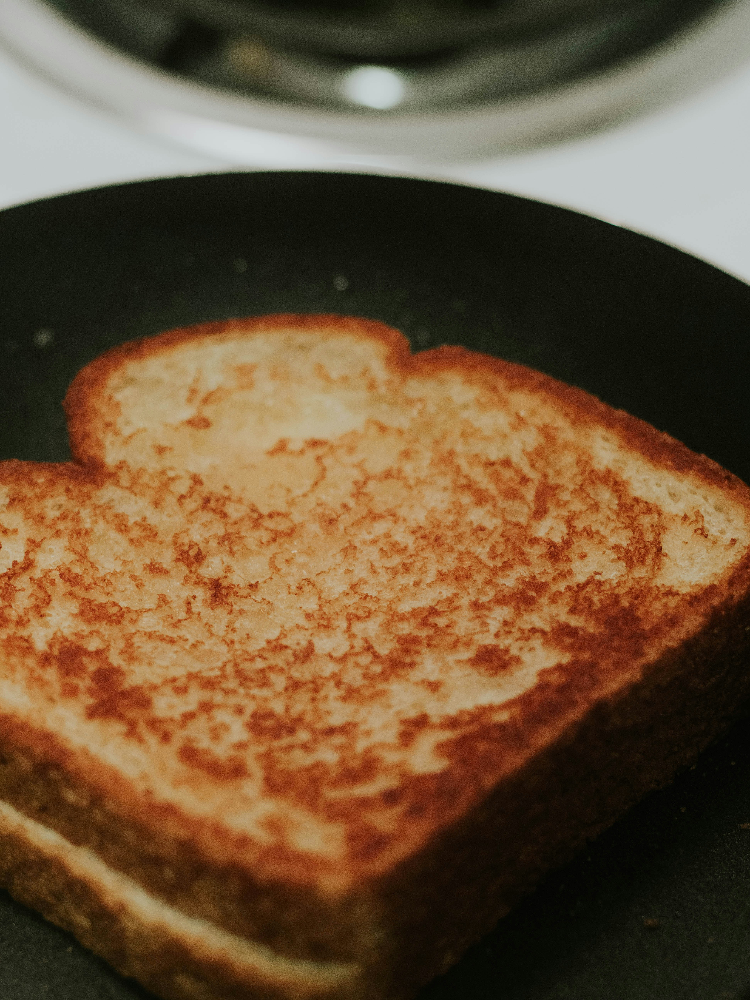

Home
Grilled Cheese

Photo by Gio Bartlett on Unsplash
Ingredients
- 2 slices of bread
- Shredded cheese blend with gruyere, cheddar, and jarlsberg
- Butter
- Mayo
Steps
- Butter one side of each slice of bread
- Put a good amount of the shredded cheese blend on one of the slices
- Put the other slice on top so the buttered sides are with the cheese
- Spread some mayo on the outside of each slice
- Fry in a pan with some oil or butter until golden brown and crispy on the outside and the cheese is melted
- Enjoy on it's own or with some tomato soup